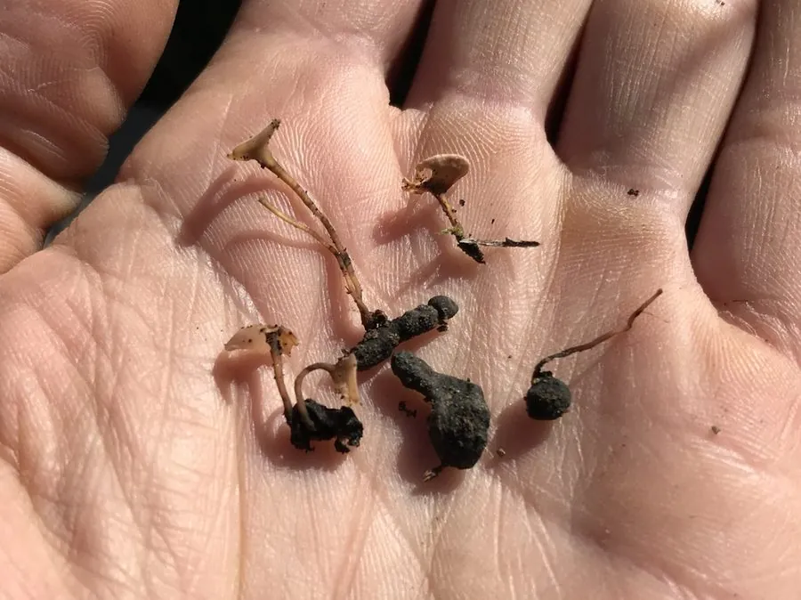

真菌 · 真菌界
油菜菌核病菌 Sclerotinia sclerotiorum

植物病原真菌，菌落白色棉絮状、形成黑色鼠粪状菌核，寄主范围极广，可致油菜与多种作物菌核病。
- 分类
- 门子囊菌门纲锤舌菌纲目柔膜菌目科核盘菌科属核盘菌属
- 栖息环境
- 土壤与病残体中越冬，油菜等作物花期侵染
- 地理分布
- 世界性分布，中国长江流域油菜产区发生严重
- 保护级别
- 暂无评估；作为广寄主植物病原广泛存在
物种志
油菜菌核病菌的菌落白色、棉絮状，生长迅速，后期在菌丝中形成黑色、不规则鼠粪状的菌核，菌核坚硬，可在土壤中存活多年。有性阶段形成盘状子囊盘，子囊孢子无色、单胞。它分泌草酸与细胞壁降解酶，杀死寄主组织。
油菜菌核病菌是世界上寄主范围最广的植物病原之一，可侵染油菜、向日葵、大豆、莴苣等 400 多种植物，造成茎腐、白霉与倒伏。菌核在土壤与病残体中越冬，春季萌发产生子囊盘，孢子随风雨传播，花期侵染花瓣后蔓延至茎。防治以轮作、深翻、清除病残体、花期喷药为主；生物防治中盾壳霉可寄生其菌核。它不感染人，但菌核混入菜籽会影响榨油品质。
形态与习性
- 菌落白色棉絮状，后期形成黑色菌核
- 菌核鼠粪状，坚硬，可在土中存活多年
- 寄主油菜、向日葵、大豆等 400 多种植物
- 症状茎基腐烂、白霉，植株倒伏
- 传播菌核越冬，春季子囊盘释放孢子
- 防治轮作深翻、清除病残体、花期喷药
趣味知识
- 它在茎秆里形成黑色鼠粪状的菌核，掉进土里能活好几年，极难根除。
- 菌核春季萌发长出小盘状的子囊盘，孢子随风落到油菜花瓣上，再侵染茎秆。
- 它的寄主超过 400 种植物，是寄主范围最广的病原真菌之一。
- 有一种叫盾壳霉的真菌专门寄生它的菌核，被用作生物防治手段。